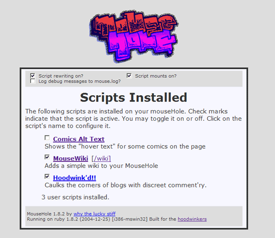
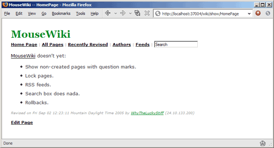
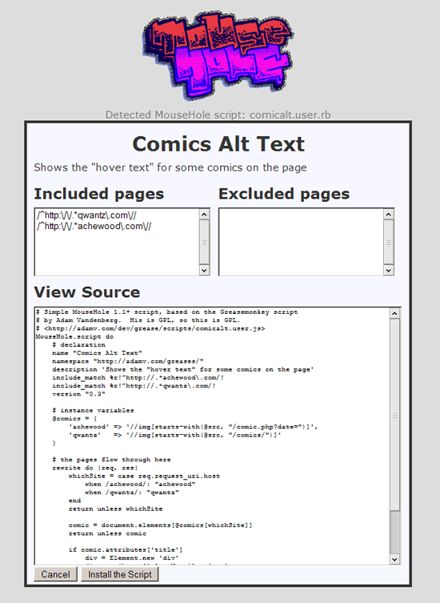
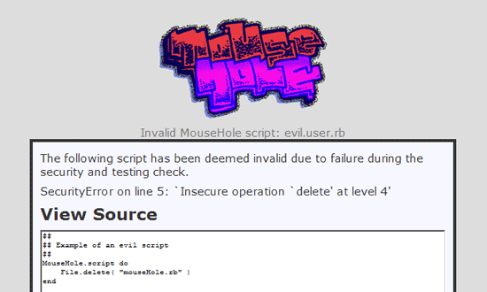

MouseHole 1.1 in Plain View #
Okay, MouseHole 1.1 is ready for you. If you’re new, MouseHole is a web proxy that you run on your machine.
So, basically you go to http://localhost:37004/ and you’ll see this:

I have three user scripts installed. One of these scripts is an Instiki clone:

Once MouseHole is running you can install MouseWiki by visiting the script itself: http://whytheluckystiff.net/mouseHole/wiki.user.rb.
When you hit Ruby user scripts on the web (if you have MouseHole set up as your proxy), you’ll get an installer window.

This installer window will test the script initially by running it under Ruby’s highest safe mode. If the script fails, you’ll get a security warning.

And that’s it. I really have no idea if this is useful at all. It’s great fun to play with.
- Download MouseHole 1.1:
- Windows installer. (No Ruby required.)
- or Source zip. (Ruby, yaml, dbm, rexml libraries required.)
- or Source tarball. (Ruby, yaml, dbm, rexml libraries required.)
- My own MouseHole scripts.
- The MouseHole wiki.
- Mailing list is mousehole-scripters
Bear in mind: One significant change from 1.0 is I’m no longer using the start method in user scripts. MouseHole now recognizes the rewrite method.
So where you had this: def start( req, res ).
You now need this: rewrite do |req, res|.
odanuki
wow, this looks like fun
MenTaLguY
Wow. Occasionally I have a brain-wave or two, but leave it to why to take an idea and really run with it. Good show!
your name
“Windows standalone” dows not work because iconv.dll is missing.
MenTaLguY
Incidentally, I had chosen 37004 in reference to hoodlum, as it spells “hOOLE” in a pre-adolescent LCD sort of way.
Maybe 53704 would be a more fitting port for MouseHole(s)?
MenTaLguY
Word on the street is that the latest Ruby-for-Windows packages will start including iconv and friends.
why
But when we merge the Hoodlum code back in?
your name: Can you tell me what happens when you move the DLLs out of
mouseHole-1.0/lib/i386-mswin32and intomouseHole-1.0?MrCode
Cool _why, good job. You basically have done pretty much all of the cooler stuff I was going to do with Wonderland. I guess great minds think alike, or it is just obvious ;)
I just haven’t had a shred of time to work on Wonderland, so consider the project permanently on hold. Plus I find it rather redundant now.
Here is the pretty simple code for handling content encodings:
You’ll need to require zlib and stringio, and change prewink to
Also I figured it was pointless to re-encode in a localhost proxy, so the final step is to delete the ‘content-encoding’ field from the results header.
Consider that my meager contribution to MouseHole.
your name
I just got and copied the dll into the mousehole folder. That worked fine.
your name
whoops, the url is http://www.dave.burt.id.au/ruby/iconv.zip
MenTaLguY
Actually, why, I don’t think there’s any value in the
max-$SAFEcheck. Any script that actually cared to be evil could choose to act differently in the presence ofhigh-$SAFE. As a result, the check only serves to engender a false sense of security.For example:
or more subtly:
MenTaLguY
why: as regards hoodlum, it appears to be a rather short MouseHole script. I will post soonish (read: this weekend).
MisterCat
Ah, the MouseHole winking presents us with a preview button which the Greasemonkey lacks… of course, I can’t seem to get it to function in either Firefox or IE.
why
MenTaLguY: I’ll probably be allowing the user to set their own
$SAFEper-script. And the default will be high. Considering that rewrite scripts really won’t be doing much.The initial check is important, though. In order to read the scripts’ settings, I have to evaluate it.
MrCode
I would imagine at this point only Ruby coders would mess with this, so hopefully they will take the time to at least peruse scripts before using them.
Hmmm, time for me to code up some obfuscated MouseHole scripts, muwhahahahaha…
hgs
Interesting… I’ll have to explore this. From the description alone, not looked at the code yet, I’m wondering if this could be used to kick some accessibility into the foulest of websites, riddled with font tags (which are particulary cheesy)...
Also, what if you normally have a proxy anyway, can you get the mousehole to talk to that proxy as your browser would have before?
Of course, the Poignant Guide will need some cartoon mice for the chapter about this, and I certainly didn’t have a “bear in mind”. :-)
lukfugl
Hmmm, is there no persistent caching of the scripts you’ve installed through your mouseHole? I really like the installer bit, but maybe it could save the scripts to a directory in addition to slurping it into the proxy via eval. Then when you restart the proxy, it can slurp in the contents of that directory.
My personal use case is that the hoodwink’d script messes up my gmail and bloglines both. I can easily exclude these from the proxy settings in Firefox (which I’m doing) but it seems it would feel cleaner to just set a few exclude_match lines in my own personal copy of the .user.rb.
(Maybe the way of future mouseHoling would include letting scripts expose configuration options to the user via the mouseHole installer?)
MrCode
lukfugl: The MouseHole scripts are installed in a .mouseHole/userScripts directory under your homedir.
I’m sure _why will add script specific options soon enough.
dys
Be sure to clear your cache if you peeked at the .user.rb files before installing MouseHole. FireFox won’t request the script again if you revisit/refresh it.
why
lukfugl: If you want to add your own exclude and include matches to hoodwink.d, it can be configured from within Mousehole.
dys: Yeah, I don’t get it. I’m passing back
no-cacheheaders (see theno_cachemethod inlib/mousehole.rb.)MenTaLguY
hgs: You can deal with double-proxies through the normal
WEBrick::HttpProxyServermeans—either override proxy_service, or simply specify your proxy URL with … I think it’s the:Proxyconfig option. I forget offhand though.MenTaLguY
hgs: sorry, I’m a moron. You would either override
#proxy_uri, or use the:ProxyURIconfig option. Should be aURIobject, and you can provide any needed (Basic) credentials via it.Comments are closed for this entry.